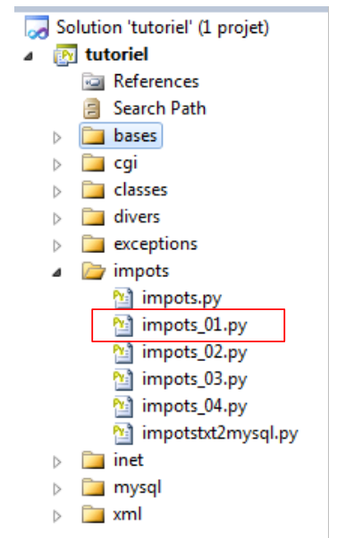

4. Exercício prático – [IMPOTS]
 |
4.1. O problema
Propõe-se escrever um programa que permita calcular o imposto de um contribuinte. Consideramos o caso simplificado de um contribuinte que tem apenas o seu salário para declarar:
- calcula-se o número de quotas do trabalhador nbParts=nbEnfants/2 + 1 se não for casado, nbEnfants/2+2 se for casado, sendo que nbEnfants é o número de filhos;
- calcula-se o seu rendimento tributável R = 0,72 * S, em que S é o seu salário anual;
- calcula-se o seu coeficiente familiar Q = R/N;
- calcula-se o seu imposto I com base nos seguintes dados.
12620.0 0 0
13190 0.05 631
15640 0.1 1290.5
24740 0.15 2072.5
31810 0.2 3309.5
39970 0.25 4900
48360 0.3 6898.5
55790 0.35 9316.5
92970 0.4 12106
127860 0.45 16754.5
151250 0.50 23147.5
172040 0.55 30710
195000 0.60 39312
0 0.65 49062
Cada linha tem 3 campos. Para calcular o imposto I, procura-se a primeira linha em que QF ≤ campo1. Por exemplo, se QF = 30000, encontrar-se-á a linha:
O imposto I é, então, igual a 0,15*R - 2072,5*nbParts. Se QF for tal que a relação QF <= campo1 nunca for verificada, então são utilizados os coeficientes da última linha. Neste caso:
o que resulta no imposto I = 0,65*R - 49062*nbParts.
4.2. Versão com listas
# -*- coding=utf-8 -*-
import math, sys
def cutNewLineChar(ligne):
# elimina-se o marcador de fim de linha, caso exista
l=len(ligne);
while(ligne[l-1]=="\n" or ligne[l-1]=="\r"):
l-=1
return(ligne[0:l]);
# --------------------------------------------------------------------------
def calculImpots(marie,enfants,salaire,limites,coeffR,coeffN):
# casado: sim, não
# filhos: número de filhos
# salário: salário anual
# número de quotas
marie=marie.lower()
if(marie=="oui"):
nbParts=float(enfants)/2+2
else:
nbParts=float(enfants)/2+1
# mais meia quota se tiver pelo menos 3 filhos
if enfants>=3:
nbParts+=0.5
# rendimento tributável
revenuImposable=0.72*salaire
# quociente familiar
quotient=revenuImposable/nbParts
# é colocado no final da tabela de limites para interromper o ciclo seguinte
limites[len(limites)-1]=quotient
# cálculo do imposto
i=0
while(quotient>limites[i]):
i=i+1
# uma vez que o quociente familiar foi colocado no final da tabela de limites, o ciclo anterior
# não pode ultrapassar os limites da tabela
# agora é possível calcular o imposto
return math.floor(revenuImposable*coeffR[i]-nbParts*coeffN[i])
# ------------------------------------------------ main
# definição das constantes
DATA="data.txt"
RESULTATS="resultats.txt"
limites=[12620,13190,15640,24740,31810,39970,48360,55790,92970,127860,151250,172040,195000,0]
coeffR=[0,0.05,0.1,0.15,0.2,0.25,0.3,0.35,0.4,0.45,0.5,0.55,0.6,0.65]
coeffN=[0,631,1290.5,2072.5,3309.5,4900,6898.5,9316.5,12106,16754.5,23147.5,30710,39312,49062]
# leitura dos dados
try:
data=open(DATA,"r")
except:
print "Impossible d'ouvrir en lecture le fichier des donnees [DATA]"
sys.exit()
# abertura do ficheiro de resultados
try:
resultats=open(RESULTATS,"w")
except:
print "Impossible de creer le fichier des résultats [RESULTATS]"
sys.exit()
# processamos a linha atual do ficheiro de dados
ligne=data.readline()
while(ligne != ''):
# remove-se o eventual caractere de fim de linha
ligne=cutNewLineChar(ligne)
# recuperam-se os 3 campos «casado:filhos:salário» que compõem a linha
(marie,enfants,salaire)=ligne.split(",")
enfants=int(enfants)
salaire=int(salaire)
# calcula-se o imposto
impot=calculImpots(marie,enfants,salaire,limites,coeffR,coeffN)
# regista-se o resultado
resultats.write("{0}:{1}:{2}:{3}\n".format(marie,enfants,salaire,impot))
# lê-se uma nova linha
ligne=data.readline()
# fecham-se os ficheiros
data.close()
resultats.close()
O ficheiro de dados data.txt:
Os ficheiros resultats.txt com os resultados obtidos:
oui:2:200000:22504.0
non:2:200000:33388.0
oui:3:200000:16400.0
non:3:200000:22504.0
oui:5:50000:0.0
non:0:3000000:1354938.0
4.3. Versão com ficheiros de texto
No exemplo anterior, os dados necessários para o cálculo do imposto foram encontrados em três listas. Passarão agora a ser procurados num ficheiro de texto:
# -*- coding=utf-8 -*-
import math,sys
# --------------------------------------------------------------------------
def getTables(IMPOTS):
# IMPOTS: o nome do ficheiro que contém os dados das tabelas de limites, coeffR, coeffN
# O ficheiro IMPOTS existe?
try:
data=open(IMPOTS,"r")
except:
return ("Le fichier IMPOTS n'existe pas",0,0,0)
# criação das 3 listas — parte-se do princípio de que as linhas estão sintaticamente corretas
# -- linha 1
ligne=data.readline()
if ligne== '':
return ("La premiere ligne du fichier {0} est absente".format(IMPOTS),0,0,0)
limites=cutNewLineChar(ligne).split(":")
for i in range(len(limites)):
limites[i]=int(limites[i])
# -- linha 2
ligne=data.readline()
if ligne== '':
return ("La deuxieme ligne du fichier {0} est absente".format(IMPOTS),0,0,0)
coeffR=cutNewLineChar(ligne).split(":")
for i in range(len(coeffR)):
coeffR[i]=float(coeffR[i])
# -- linha 3
ligne=data.readline()
if ligne== '':
return ("La troisieme ligne du fichier {0} est absente".format(IMPOTS),0,0,0)
coeffN=cutNewLineChar(ligne).split(":")
for i in range(len(coeffN)):
coeffN[i]=float(coeffN[i])
# fim
return ("",limites,coeffR,coeffN)
# --------------------------------------------------------------------------
def cutNewLineChar(ligne):
# elimina-se o marcador de fim de linha, caso exista
l=len(ligne);
while(ligne[l-1]=="\n" or ligne[l-1]=="\r"):
l-=1
return(ligne[0:l]);
# --------------------------------------------------------------------------
def calculImpots(marie,enfants,salaire,limites,coeffR,coeffN):
# casado: sim, não
# filhos: número de filhos
# salário: salário anual
# número de quotas
marie=marie.lower()
if(marie=="oui"):
nbParts=float(enfants)/2+2
else:
nbParts=float(enfants)/2+1
# mais meia quota se tiver pelo menos 3 filhos
if enfants>=3:
nbParts+=0.5
# rendimento tributável
revenuImposable=0.72*salaire
# quociente familiar
quotient=revenuImposable/nbParts
# é colocado no final da tabela de limites para interromper o ciclo seguinte
limites[len(limites)-1]=quotient
# cálculo do imposto
i=0
while(quotient>limites[i]):
i=i+1
# uma vez que o quociente familiar foi colocado no final da tabela de limites, o ciclo anterior
# não pode ultrapassar os limites da tabela
# agora é possível calcular o imposto
return math.floor(revenuImposable*coeffR[i]-nbParts*coeffN[i])
# ------------------------------------------------ main
# definição das constantes
DATA="data.txt"
RESULTATS="resultats.txt"
IMPOTS="impots.txt"
# os dados necessários para o cálculo do imposto foram colocados no ficheiro IMPOTS
# à razão de uma linha por tabela, na forma
# val1:val2:val3,...
(erreur,limites,coeffR,coeffN)=getTables(IMPOTS)
# Houve algum erro?
if(erreur):
print "{0}\n".format(erreur)
sys.exit()
# leitura dos dados
try:
data=open(DATA,"r")
except:
print "Impossible d'ouvrir en lecture le fichier des donnees [DATA]"
sys.exit()
# abertura do ficheiro de resultados
try:
resultats=open(RESULTATS,"w")
except:
print "Impossible de creer le fichier des résultats [RESULTATS]"
sys.exit()
# processamos a linha atual do ficheiro de dados
ligne=data.readline()
while(ligne != ''):
# removendo o eventual caractere de fim de linha
ligne=cutNewLineChar(ligne)
# recuperam-se os 3 campos «casado:filhos:salário» que compõem a linha
(marie,enfants,salaire)=ligne.split(",")
enfants=int(enfants)
salaire=int(salaire)
# calcula-se o imposto
impot=calculImpots(marie,enfants,salaire,limites,coeffR,coeffN)
# regista-se o resultado
resultats.write("{0}:{1}:{2}:{3}\n".format(marie,enfants,salaire,impot))
# lê-se uma nova linha
ligne=data.readline()
# fecham-se os ficheiros
data.close()
resultats.close()
Os mesmos que anteriormente.
O método getImpots acima (linhas 6-36) devolve uma tupla (erreur, limites, coeffR, coeffN), em que erreur é uma mensagem de erro que pode estar vazia. Pode ser necessário gerir estes casos de erro com exceções. Nesse caso:
- em caso de erro, o método getImpots lança uma exceção;
- caso contrário, devolve o tuplo (limites, coeffR, coeffN).
O código do método getImpots passa então a ser o seguinte:
def getTables(IMPOTS):
# IMPOTS: o nome do ficheiro que contém os dados das tabelas de limites, coeffR, coeffN
# O ficheiro IMPOTS existe? Se não, é lançada a exceção IOError neste caso
data=open(IMPOTS,"r")
# criação das 3 listas — parte-se do princípio de que as linhas estão sintaticamente corretas
# -- linha 1
ligne=data.readline()
if ligne== '':
raise RuntimeError ("La premiere ligne du fichier {0} est absente".format(IMPOTS))
limites=cutNewLineChar(ligne).split(":")
for i in range(len(limites)):
limites[i]=int(limites[i])
# — linha 2
ligne=data.readline()
if ligne== '':
raise RuntimeError ("La deuxieme ligne du fichier {0} est absente".format(IMPOTS))
coeffR=cutNewLineChar(ligne).split(":")
for i in range(len(coeffR)):
coeffR[i]=float(coeffR[i])
# -- linha 3
ligne=data.readline()
if ligne== '':
raise RuntimeError ("La troisieme ligne du fichier {0} est absente".format(IMPOTS))
coeffN=cutNewLineChar(ligne).split(":")
for i in range(len(coeffN)):
coeffN[i]=float(coeffN[i])
# fim
return (limites,coeffR,coeffN)
- linha 4: não se verifica se a abertura do ficheiro falha. Se falhar, é lançada uma exceção IOError. Deixa-se que esta seja propagada para o programa chamador;
- linhas 9-10: lança-se uma exceção para indicar que a primeira linha esperada está ausente. Utiliza-se uma exceção predefinida RuntimeError. Também é possível criar as próprias classes de exceção. Faremos isso um pouco mais adiante;
- linhas 16-17 e 23-24: repetimos o mesmo procedimento para as linhas 2 e 3.
O código do programa principal fica então assim:
# ------------------------------------------------ main
# definição das constantes
DATA="data.txt"
RESULTATS="resultats.txt"
IMPOTS="impots.txt"
# os dados necessários para o cálculo do imposto foram colocados no ficheiro IMPOTS
# à razão de uma linha por tabela, na forma
# val1:val2:val3,...
erreur=False
try:
(limites,coeffR,coeffN)=getTables(IMPOTS)
except IOError, message:
erreur=True
except RuntimeError, message:
erreur=True
# Houve algum erro?
if(erreur):
print "L'erreur suivante s'est produite : {0}\n".format(message)
sys.exit()
# leitura dos dados
...
- linhas 12-17: chamamos o método getImpots e tratamos as duas exceções que este pode lançar: IOError e RuntimeError. Neste tratamento, limitamo-nos a registar que ocorreu um erro;
- linhas 20-22: exibe-se a mensagem de erro da exceção interceptada e encerra-se o programa.